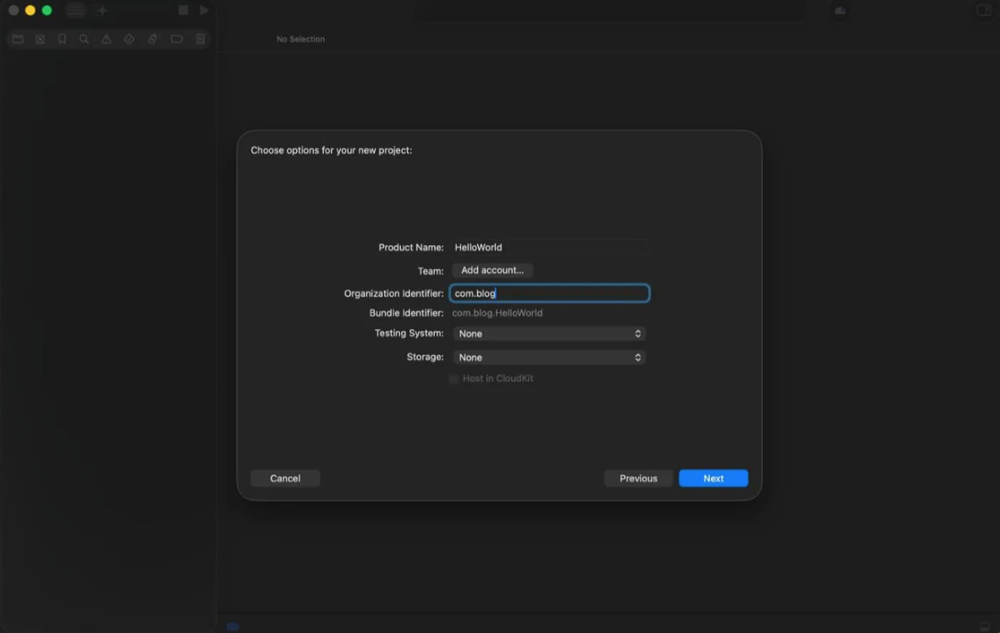
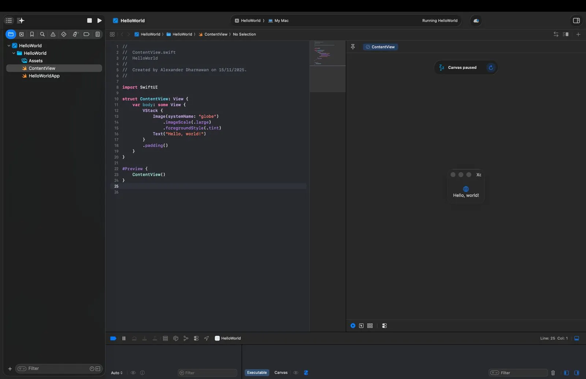

Tutorial Dasar: Setup Xcode dan Membuat App iOS Pertama
1 Persiapan Lingkungan Kerja (Xcode)
Langkah pertama adalah mendapatkan IDE resmi dari Apple, yaitu Xcode.
- Unduh dari App Store: Buka App Store di Mac anda, cari "Xcode", dan klik tombol "Get" atau "Install". Pastikan koneksi internet stabil karena ukurannya cukup besar.
- Instalasi Awal: Setelah selesai diunduh, buka Xcode. Anda akan diminta menyetujui lisensi ("Agree") dan memasukkan password Mac untuk menginstal komponen tambahan (Command Line Tools, dll).
- Tunggu Prosesnya: Biarkan Xcode menyelesaikan instalasi komponen pendukungnya sampai jendela "Welcome to Xcode" muncul.
2 Memulai Project Baru
Setelah Xcode siap, mari kita buat aplikasi pertama.
- Create New Project: Pada layar sambutan, pilih opsi "Create a new Xcode project".
- Pilih Template: Masuk ke tab iOS, lalu pilih template App. Klik Next untuk melanjutkan.


3 Pengaturan Awal Project
Isi identitas aplikasi yang akan anda buat:
- Product Name: HelloWorld (Nama aplikasi).
- Team: Pilih "None" jika belum punya akun developer, atau pilih akun personal anda.
-
Organization Identifier: Biasanya format domain
terbalik, contoh:
com.namaanda. - Interface: Pilih SwiftUI (Framework UI modern Apple).
- Language: Pilih Swift.
Klik Next, lalu tentukan folder penyimpanan project di Mac anda. Klik Create untuk menyelesaikan setup.
4 Eksplorasi Workspace & Running App
Jangan bingung dengan tampilan Xcode. Fokus pada tiga bagian utama ini:
- Navigator (Kiri): Menampilkan file-file project anda.
- Editor (Tengah): Area tempat anda menulis kode (coding).
- Canvas (Kanan): Menampilkan preview tampilan aplikasi secara real-time.
Bedah Kode (ContentView.swift)
File utama yang terbuka adalah ContentView.swift.
Isinya kurang lebih seperti ini:
import SwiftUI
struct ContentView: View {
var body: some View {
VStack {
Image(systemName: "globe")
.imageScale(.large)
.foregroundStyle(.tint)
Text("Hello, world!")
}
.padding()
}
}Menjalankan Aplikasi
Lihat ke panel Canvas di sebelah kanan. Jika preview tidak muncul, klik tombol "Resume". Anda akan melihat simulasi iPhone menampilkan teks "Hello, world!". Anda juga bisa klik tombol Play (▶️) di pojok kiri atas untuk menjalankan simulator penuh.
